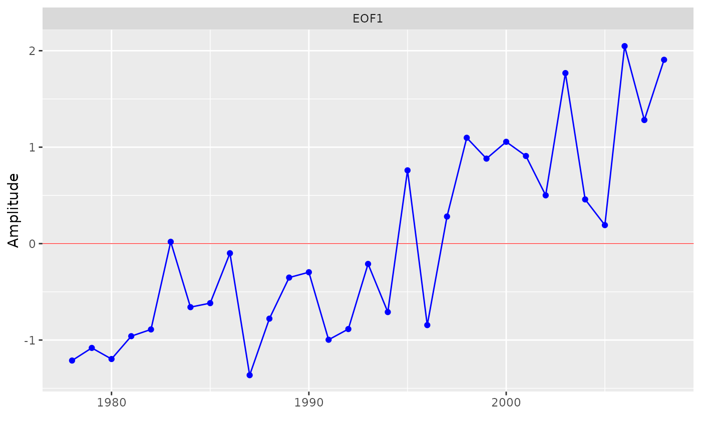
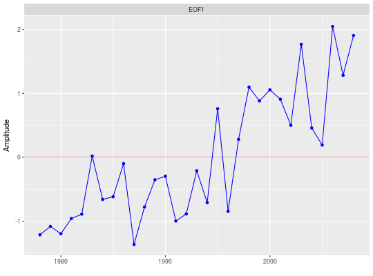

Plots the rotated empirical orthogonal functions or amplitude time series
resulting from eof.
eofPlot(x, type = c("coef", "amp"), rev = FALSE, ord = FALSE)
| x | result of the function |
|---|---|
| type | whether the EOF coefficients or amplitudes should be plotted |
| rev | logical indicating whether coefficients and amplitudes should be
multiplied by |
| ord | logical indicating whether coefficients should be ordered by size |
A plot of the EOF coefficients or amplitudes.
When the columns of the original data have a natural order, such as stations
along a transect or months of the year, there may be no need to reorder the
EOF coefficients. But if there is no natural order, such as when columns
represents disparate sites around the world, the plot can be more
informative if coefficients are ordered by size (ord = TRUE).
Coefficients and amplitudes for a given EOF may be more easily interpreted
if rev = TRUE, because the sign of the first coefficient is
arbitrarily determined and all the other signs follow from that choice.
# Create an annual matrix time series chla1 <- aggregate(sfbayChla, 1, mean, na.rm = TRUE) chla1 <- chla1[, 1:12] # remove stations with missing years # eofNum (see examples) suggests n = 1 e1 <- eof(chla1, n = 1) eofPlot(e1, type = 'coef')eofPlot(e1, type = 'amp')